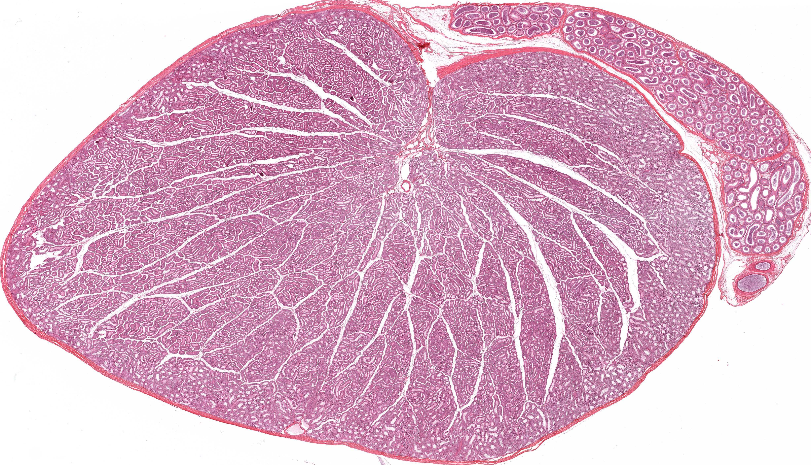
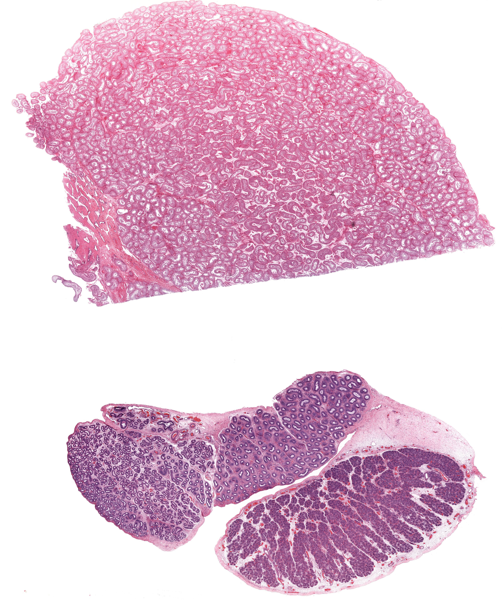
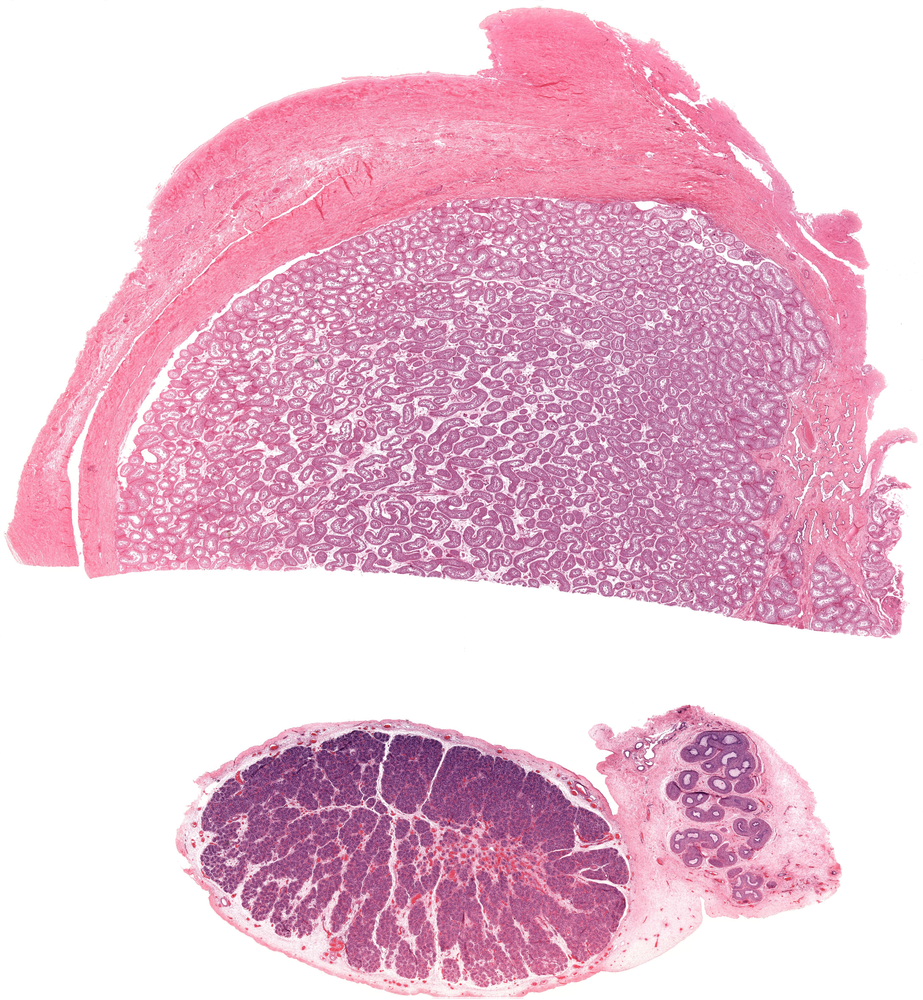
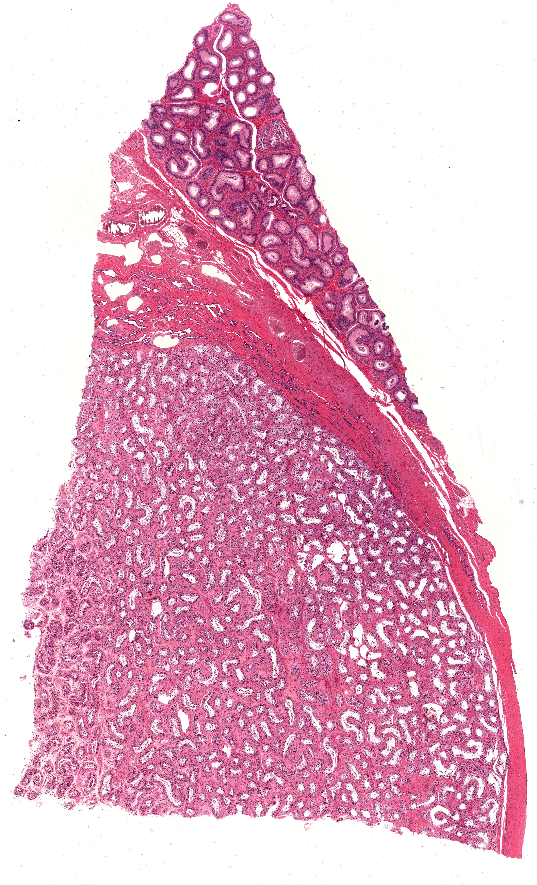
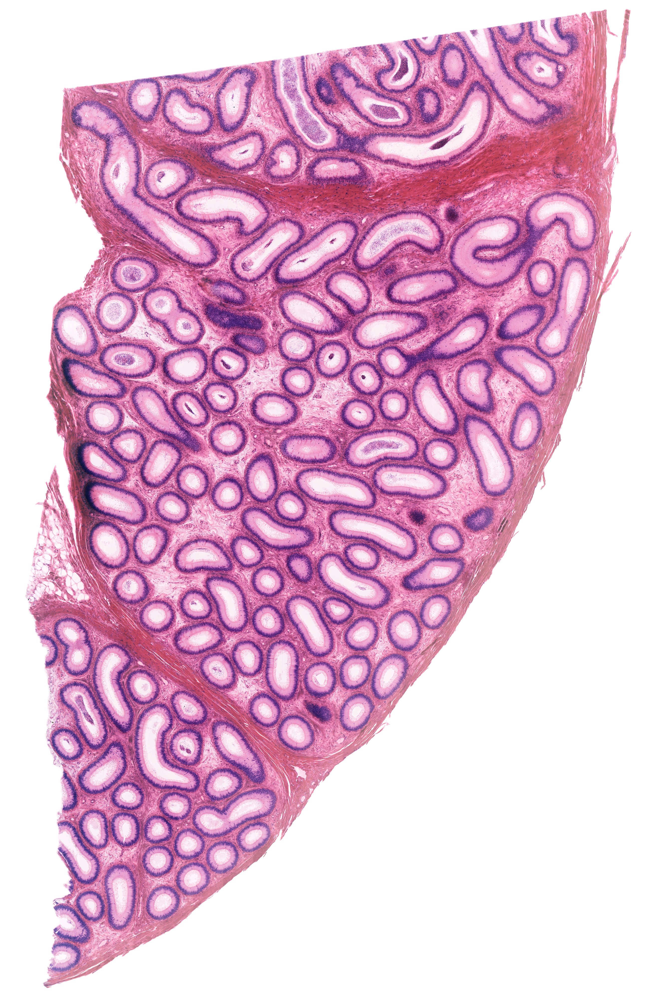
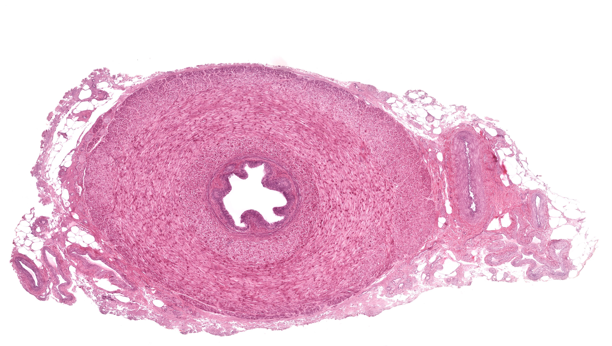
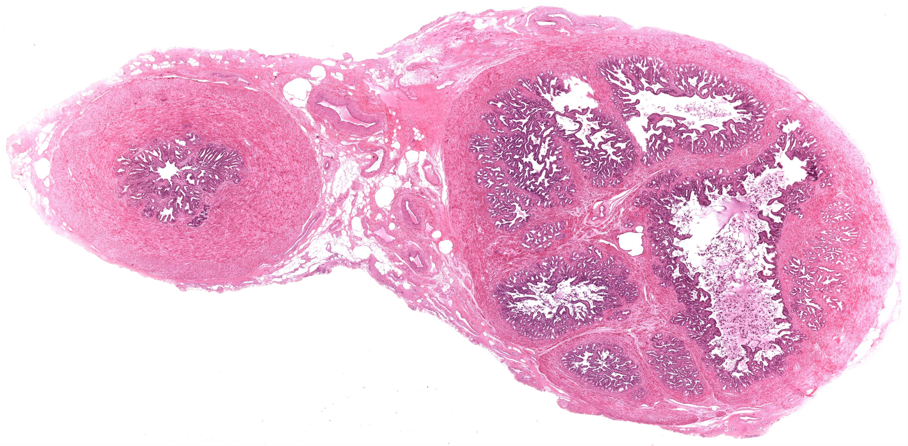
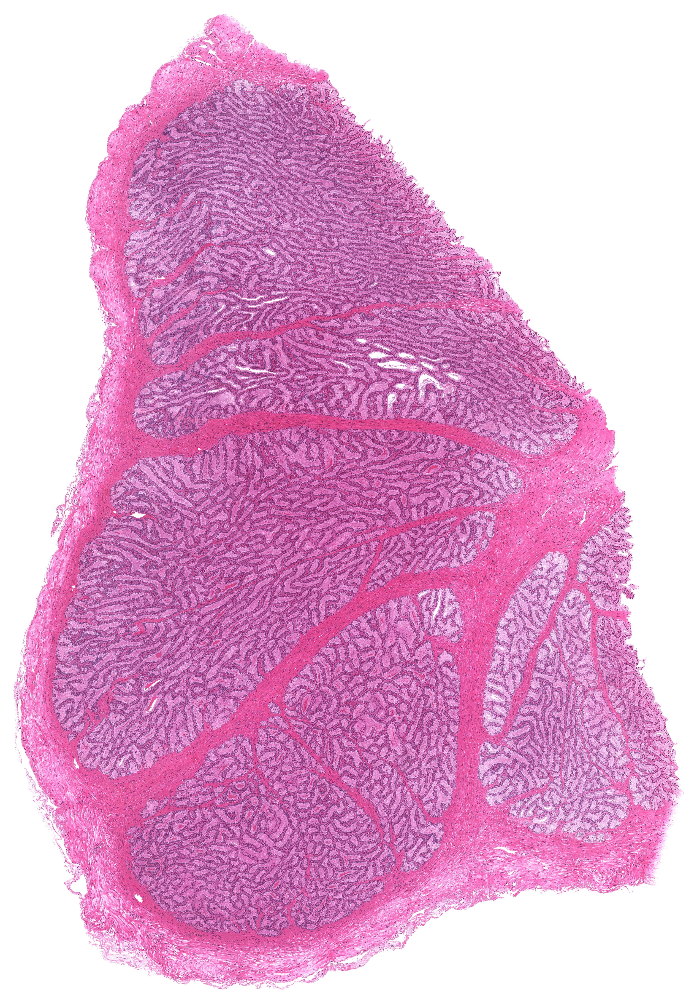
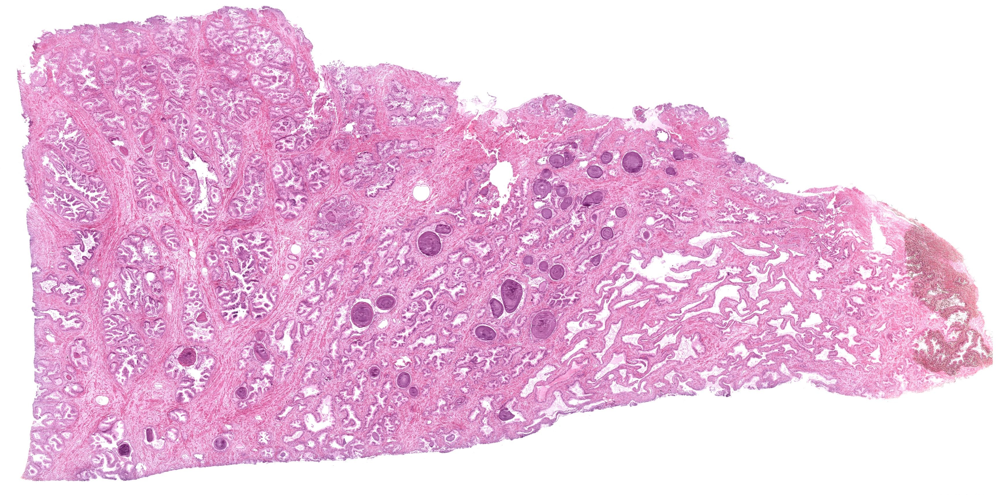
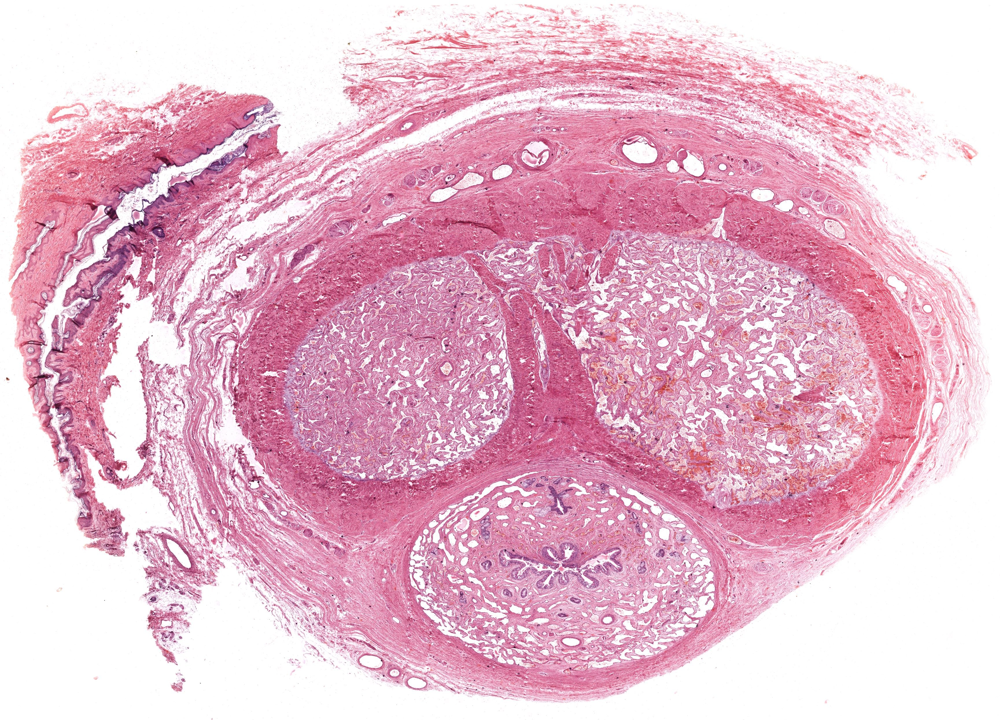

Chapter 19 · 器官系统
男性生殖系统
Male Reproductive System · 6 小节 · 13 张切片 · 8 张电镜 · 本地概览 13 张
本章导语
男性生殖系统的学习主线是精子发生与运送。睾丸生精小管从基膜到腔面依次排列着各发育阶段的生精细胞，支持细胞为它们提供微环境；精子经睾丸网、输出小管进入附睾成熟，再沿输精管与射精管排出，沿途加入精囊、前列腺与尿道球腺的分泌物，最后经阴茎排出体外。
复习重点
- 生精小管上皮由支持细胞与各级生精细胞共同构成
- 精子发生经历精原细胞、初级与次级精母细胞、精子细胞各阶段
- 支持细胞构成血睾屏障并分泌雄激素结合蛋白
- 睾丸间质细胞成群分布，分泌雄激素
- 附睾管主细胞游离面有静纤毛，与精子成熟相关
- 前列腺腺泡腔内可见凝固体，可随年龄增长而钙化
易混淆对比
- 输出小管 vs 附睾管：管腔轮廓与上皮：输出小管腔面呈波浪状，附睾管腔面平整并有静纤毛
- 生精小管 vs 前列腺腺泡：有无生精细胞层次与腔内凝固体，生精小管上皮呈明显的分层排列
- 输精管 vs 输尿管：肌层厚度与上皮类型：输精管肌层厚、管腔小；输尿管为变移上皮且皱襞明显
待核验译名：Ductus Deferens 国内教材多用输精管，也有用输精管（vas deferens）并注英文的写法；Seminal Vesicles 中文另有精囊腺一称，本内容统一用精囊
阅读提示：本页中文要点为自编复习笔记，不是原站正文的翻译；标本图像为经作者书面许可保存的中分辨率概览，每张卡片保留 © 署名与原页面链接，“原站本章/原站切片”可查看高倍与结构标注。本站为 Histology Guide 的非官方中文学习改编版，未经其认可或背书。
睾丸
Testis
- 睾丸表面为鞘膜与白膜，白膜在睾丸后缘增厚形成睾丸纵隔。
- 睾丸实质被结缔组织小隔分为小叶，小叶内含生精小管。
- 生精小管上皮由支持细胞与各级生精细胞构成，基膜外有肌样细胞。
- 睾丸间质细胞成群分布于小管之间，胞质嗜酸性，分泌雄激素。
- 生精小管汇成直精小管进入睾丸网，再经输出小管离开睾丸。
低倍镜低倍镜观察生精小管断面密度与间质细胞团的位置。
高倍镜高倍镜按核形态与位置辨认精原细胞、精母细胞与精子细胞。
易混提示：支持细胞核多位于基底部且核仁明显，勿与精原细胞的圆形深染核混淆。
相关标本 · 4

点击图片放大 · 本地概览
MHS 267 Testis and Epididymis
睾丸与附睾（H&E）
H&E
本地概览
4033×2311
图像 © Histology Guide 及/或原始贡献者 · 非商业教育用途，经许可保存；原页面链接见下方

点击图片放大 · 本地概览
MH 178a Testis
睾丸（新生儿与成人，切片一）
Neonatal and Adult
H&E
本地概览
4061×4861
图像 © Histology Guide 及/或原始贡献者 · 非商业教育用途，经许可保存；原页面链接见下方

点击图片放大 · 本地概览
MH 178b Testis
睾丸（新生儿与成人，切片二）
Neonatal and Adult
H&E
本地概览
4348×4706
图像 © Histology Guide 及/或原始贡献者 · 非商业教育用途，经许可保存；原页面链接见下方

点击图片放大 · 本地概览
MHS 204 Testis and Epididymis
睾丸网与输出小管
H&E
本地概览
4800×7910
图像 © Histology Guide 及/或原始贡献者 · 非商业教育用途，经许可保存；原页面链接见下方
附睾
Epididymis
- 附睾由输出小管与附睾管构成，两者管壁结构不同。
- 输出小管上皮为假复层柱状，管腔呈波浪状，精子分布不均。
- 附睾管上皮为假复层柱状，主细胞游离面有静纤毛，腔面平整齐。
- 附睾管管壁外有环行平滑肌，其收缩推动精子运行。
- 精子在附睾内获得运动能力与受精能力，此过程称为精子成熟。
低倍镜低倍镜依管腔轮廓区分输出小管与附睾管。
高倍镜高倍镜观察静纤毛与上皮细胞类型，确认附睾管特征。
易混提示：输出小管腔面呈波浪状；附睾管腔面平整且可见成束的静纤毛。
相关标本 · 3
MHS 204 Testis and Epididymis
睾丸网与输出小管
Rete Testis and Efferent Ductules
H&E
本地概览
4800×7910
图像 © Histology Guide 及/或原始贡献者 · 非商业教育用途，经许可保存；原页面链接见下方
MHS 267 Testis and Epididymis
睾丸与附睾（H&E）
H&E
本地概览
4033×2311
图像 © Histology Guide 及/或原始贡献者 · 非商业教育用途，经许可保存；原页面链接见下方

点击图片放大 · 本地概览
MH 185 Epididymis
附睾（输出小管与附睾管）
H&E
本地概览
2608×4005
图像 © Histology Guide 及/或原始贡献者 · 非商业教育用途，经许可保存；原页面链接见下方
输精管
Ductus Deferens
- 输精管壁由黏膜、肌层和外膜构成，肌层特别厚。
- 黏膜上皮为假复层柱状，固有层富含弹性纤维。
- 肌层为内纵、中环、外纵三层平滑肌，管腔因收缩而呈星形。
- 输精管末端膨大为壶腹，与精囊导管合成射精管。
低倍镜低倍镜观察厚肌层与较窄的星形管腔，这是输精管的标志。
高倍镜高倍镜确认三层平滑肌的排列方向与黏膜上皮类型。
易混提示：输精管肌层厚而管腔小；输尿管肌层较薄且黏膜皱襞更明显。
相关标本 · 2

点击图片放大 · 本地概览
MH 181 Ductus Deferens
输精管（厚肌层）
H&E
本地概览
4422×2504
图像 © Histology Guide 及/或原始贡献者 · 非商业教育用途，经许可保存；原页面链接见下方

点击图片放大 · 本地概览
MH 182 Seminal Vesicle and Ductus Deferens
精囊与输精管
H&E
本地概览
3569×1755
图像 © Histology Guide 及/或原始贡献者 · 非商业教育用途，经许可保存；原页面链接见下方
精囊
Seminal Vesicles
- 精囊为高度迂曲的管状腺，黏膜形成复杂的网状皱襞。
- 上皮为假复层柱状，胞质内含分泌颗粒，分泌物富含果糖。
- 固有层与肌层界限不清，肌层较薄且呈交错排列。
- 精囊分泌物呈碱性，是精液的主要液体成分之一。
低倍镜低倍镜观察皱襞交织形成的蜂窝状腔面轮廓。
高倍镜高倍镜辨认假复层柱状上皮与腔内的分泌物。
易混提示：精囊皱襞的断面形似多个独立腺体，实为同一迂曲管腔的不同切面。
相关标本 · 2
MH 182 Seminal Vesicle and Ductus Deferens
精囊与输精管
H&E
本地概览
3569×1755
图像 © Histology Guide 及/或原始贡献者 · 非商业教育用途，经许可保存；原页面链接见下方

点击图片放大 · 本地概览
MHS 256 Seminal Vesicle
精囊（黏膜皱襞）
H&E
本地概览
3925×5625
图像 © Histology Guide 及/或原始贡献者 · 非商业教育用途，经许可保存；原页面链接见下方
前列腺
Prostate
- 前列腺由腺组织与纤维肌性间质构成，被膜内含静脉丛。
- 腺泡大小不一、形态不规则，上皮高低不等，可呈乳头状突入腔内。
- 腺泡腔内常见圆形凝固体，即前列腺小体，可发生钙化。
- 间质内平滑肌丰富，其收缩有助于分泌物排出。
低倍镜低倍镜观察腺泡分布不均与纤维肌性间质的比例。
高倍镜高倍镜寻找腺腔内的凝固体与不规则排列的上皮。
易混提示：前列腺腺泡形态不规则、上皮高低不一属正常表现，并非增生性改变。
相关标本 · 1

点击图片放大 · 本地概览
MH 183 Prostate
前列腺（腺泡与凝固体）
H&E
本地概览
3455×1711
图像 © Histology Guide 及/或原始贡献者 · 非商业教育用途，经许可保存；原页面链接见下方
阴茎
Penis
- 阴茎由两条阴茎海绵体与一条尿道海绵体构成。
- 海绵体为勃起组织，由结缔组织小梁与海绵状血窦组成。
- 尿道海绵体内有尿道通过，其前端膨大形成阴茎头。
- 白膜厚而致密，包绕各海绵体，皮肤薄且活动度大。
低倍镜低倍镜观察三大海绵体的分布与尿道所在位置。
高倍镜高倍镜确认海绵状血窦腔隙与厚白膜结构。
易混提示：尿道海绵体内含尿道，阴茎海绵体内无尿道，这是区分两者的要点。
相关标本 · 1

点击图片放大 · 本地概览
MH 184 Penis
阴茎（海绵体）
H&E
本地概览
3458×2491
图像 © Histology Guide 及/或原始贡献者 · 非商业教育用途，经许可保存；原页面链接见下方
本章电镜照片
8 张 · 需在线查看
电镜照片 8 张（在线查看）
自测
9 题 · 自编
先自己回答，再点“显示答案”。标记为易错的项目会进入复习模式。
生精小管上皮由哪两类细胞构成？
概念
支持细胞与各级生精细胞，基膜外还有肌样细胞。
切片上如何从基膜向腔面排列各级生精细胞？
识别
精原细胞贴近基膜，向内依次为初级精母细胞、次级精母细胞、精子细胞，腔面可见精子。
支持细胞有哪些主要功能？
概念
支持与营养生精细胞、构成血睾屏障、吞噬残余体并分泌雄激素结合蛋白。
睾丸间质细胞的位置与功能是什么？
识别
成群分布于生精小管之间的间质内，胞质嗜酸性，分泌雄激素。
附睾管上皮的静纤毛有何意义？
概念
静纤毛实为微绒毛束，可扩大表面积、参与液体重吸收，利于精子成熟。
如何区分输出小管与附睾管？
对比
输出小管管腔呈波浪状、精子分布不均；附睾管管腔平整、上皮有静纤毛。
输精管壁最显著的结构特点是什么？
识别
肌层特别厚，为内纵、中环、外纵三层平滑肌，管腔因收缩呈星形。
前列腺腺泡腔内的圆形小体是什么？
识别
凝固体，又称前列腺小体，由分泌物浓缩形成，可发生钙化。
阴茎海绵体与尿道海绵体的根本区别是什么？
对比
尿道海绵体内有尿道通过，阴茎海绵体内没有尿道。